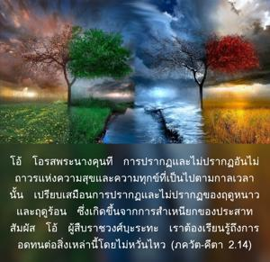
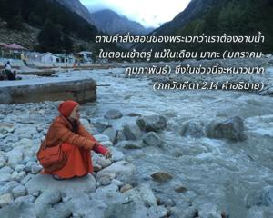
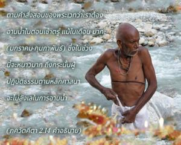
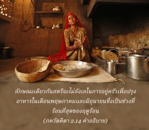

โอ้ โอรสพระนาง กุนฺตี การปรากฏ และไม่ปรากฏอันไม่ถาวรแห่งความสุข และความทุกข์ที่เป็นไปตามกาลเวลานั้น เปรียบเสมือนการปรากฏและการไม่ปรากฏ ของฤดูหนาวและฤดูร้อน ซึ่งเกิดขึ้นจากการสำเหนียกของประสาทสัมผัส โอ้ ผู้สืบราชวงศ์ ภรต เราต้องเรียนรู้ถึงการอดทนต่อสิ่งเหล่านี้โดยไม่หวั่นไหว




ในการปฏิบัติหน้าที่อย่างถูกต้องเราจะต้องเรียนรู้การอดทนต่อการปรากฏและการไม่ปรากฏแห่งความสุขและความทุกข์อันไม่ถาวรตามคำสั่งสอนของพระเวทว่า เราต้องอาบน้ำในตอนเช้าตรู่แม้ในเดือน มาฆ (มกราคม-กุมภาพันธ์) ซึ่งในช่วงนี้จะหนาวมาก ถึงกระนั้นผู้ปฏิบัติธรรมตามหลักศาสนาจะไม่ลังเลในการอาบน้ำ ลักษณะเดียวกันสตรีจะไม่ลังเลในการอยู่ครัวเพื่อปรุงอาหารในเดือนพฤษภาคมและมิถุนายนซึ่งเป็นช่วงที่ร้อนที่สุดของฤดูร้อน เราต้องปฏิบัติหน้าที่ของเราแม้อากาศจะไม่เอื้ออำนวยความสะดวก เช่นเดียวกันการต่อสู้เป็นหลักศาสนาของ กฺษตฺริย แม้จะต้องต่อสู้กับสหายหรือสังคญาติ เราจึงไม่ควรบ่ายเบี่ยงจากหน้าที่ที่กำหนดไว้ เราต้องปฏิบัติตามกฎเกณฑ์ที่กำหนดไว้ตามหลักศาสนาเพื่อพัฒนาระดับความรู้ เนื่องจากว่าความรู้และการอุทิศตนเสียสละเท่านั้นที่จะสามารถนำเราให้หลุดพ้นจากบ่วงของ มายา หรือความหลงได้
ทั้งสองพระนามที่ทรงใช้เรียก อรฺชุน มีความสำคัญเช่นกัน เกานฺเตย แสดงถึงความสัมพันธ์ทางสายเลือดอันยิ่งใหญ่ของฝ่ายพระมารดา และ ภารต แสดงให้เห็นถึงความยิ่งใหญ่ของฝ่ายพระบิดา อรฺชุน ทรงได้รับมรดกอันยิ่งใหญ่จากทั้งสองฝ่าย และมรดกอันยิ่งใหญ่นี้ทำให้ทรงต้องมีความรับผิดชอบในการปฏิบัติหน้าที่อย่างถูกต้อง ดังนั้น อรฺชุน ทรงไม่สามารถที่จะหลีกเลี่ยงการต่อสู้ได้